ENTENDA A ORDEM CRONOLÓGICA DE TODA A SAGA STAR WARS
Mas se você, em meio a tantos filmes, séries, animações e spin-offs, acabou se perdendo um pouco na cronologia da trama, não tem problema. A gente tenta relembrar em que ordem os eventos da história ocorreram (o que não tem nada a ver com a ordem em que eles foram lançados).
No universo de Star Wars, os anos são contados a partir da Batalha de Yavin, o evento decisivo do ‘Episódio IV – Uma Nova Esperança’, que resulta na destruição da primeira Estrela da Morte. A partir desse ponto, as datas são contadas como BBY (“before the Battle of Yavin”) e ABY (“after the Battle of Yavin”). É como o nosso “antes de Cristo” (a.C.) e “depois de Cristo” (d.C.). Anos anteriores à batalha contam regressivamente, enquanto as datas seguintes avançam progressivamente.
Basicamente, até agora a cronologia do universo de Star Wars se divide em três grandes eras: República — antes da ascensão de Darth Vader ao Império; Rebelião — aquela que conhecemos no primeiro filme lançado, com a Aliança Rebelde combatendo o Império de Darth Vader; e Resistência — a era pela qual os filmes se encontram agora, com a tentativa de restabelecimento da Ordem Jedi. Veja a seguir onde cada filme e série se encaixa na história
A Era da República
1. Episódio I: A Ameaça Fantasma (32 BBY)
Tudo começou com Obi-Wan Kenobi e seu mestre Jedi Qui-Gon Jinn conhecendo a Rainha Padmé Amidala e o jovem Anakin Skywalker. Esqueça o papo dos midi-chlorians e a existência do Jar Jar Binks e conseguimos ter um filme com acontecimentos importantes para a saga: conhecemos C-3PO e R2-D2, ficamos sabendo da existência dos Sith, Qui-Gon enfrenta Darth Maul e Palpatine se torna Chanceler Supremo da República Galática, abrindo seu caminho para o Império.
2. Episódio II: Ataque dos Clones
Dez anos se passaram desde o primeiro filme e somos apresentados a um Anakin Skywalker crescido e bem interessado em Padmé, que parece não ter envelhecido nada (o que colocam na água em Naboo?). O romance dos dois já evolui para casamento ao mesmo tempo em que o Conde Dooku, um secreto Lorde Sith, tenta liderar planetas separatistas da República. Enquanto isso, a Guerra dos Clones funciona como uma desculpa para dar poderes emergenciais a Palpatine. É neste filme que Anakin descobre sobre a morte de sua mãe, abrindo caminho para o Lado Negro.
3. A Guerra dos Clones (22 BBY a 19 BBY) – longa de animação
Ambientado na mesma época dos episódios II e III, este longa de animação se concentra mais nos eventos da Guerra dos Clones, como o próprio nome diz. A trama expande os eventos do conflito entre a República e os Separatistas, com um roteiro em que a Ordem Jedi é culpabilizada pelo sequestro do filho de Jabba the Hutt. Nesta animação conhecemos a padawan de Anakin: Ahsoka Tano.
4. The Clone Wars (22 – 19 BBY)
Também ambientada durante a Guerra dos Clones, esta série de animação tenta preencher algumas lacunas não explicadas na trilogia da Era da República. Em seis temporadas, os episódios conseguem aprofundar os conflitos da República e dos Separatistas, abordando os casos de corrupção no Senado e na Ordem Jedi. É nesta série que Yoda aprende a utilizar a Força para reaparecer como fantasma.
5. Episódio III: A Vingança dos Sith (19 BBY)
Apenas três anos após os eventos do Episódio II, a Guerra chega a seu ponto crucial. Influenciado por Palpatine e assustado com visões de Padmé morrendo, Anakin sucumbe mais profundamente ao Lado Negro. Um ultimato contra a Ordem Jedi, com a ajuda do próprio Anakin, força Obi-Wan e Yoda a se esconderem. É neste filme que Padmé dá à luz Luke e Leia e então morre (de desgosto, a gente imagina). Para fechar a Era da República, o Império é criado e Anakin se torna Darth Vader.
6. The Bad Batch (18 BBY) – série de animação
A série de lançada pelo Disney+ se passa logo após o fim do ‘Episódio III’, nos primeiros anos do Império. A história segue clones de elite e experimentais, “Os Malfeitos” (introduzidos pela primeira vez em ‘A Guerra dos Clones’), um esquadrão único de clones que variam geneticamente de seus irmãos – cada um com uma habilidade excepcional e singular que os torna soldados extraordinariamente eficazes e uma tripulação formidável.
A Era da Rebelião
7. Han Solo: Uma história Star Wars (13 BBY a 10 BBY)
Como este spin-off se encaixa entre a ascensão do Império e o início das atividades da Aliança Rebelde, ele já pode ser encaixado na Era da Rebelião. O filme de Han Solo dá um pouco mais de contexto ao contrabandista mais querido da galáxia, apresentando ao público seu passado com Lando Calrissian e também o início de sua amizade com Chewbacca.
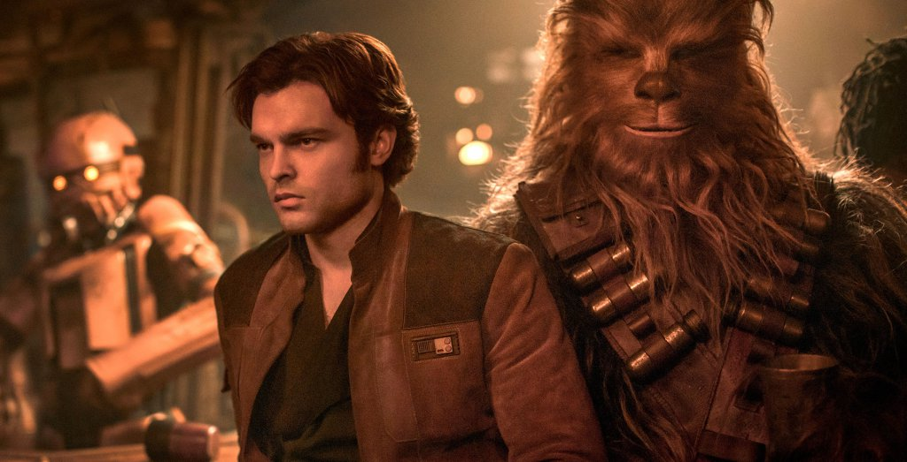
8. Obi-Wan Kenobi (9 BBY)
A série Obi-Wan Kenobi começa começa 10 anos após os dramáticos eventos de Star Wars: A Vingança dos Sith, onde Kenobi enfrentou sua maior derrota. Os eventos de Han Solo: Uma história Star Wars acabaram de acontecer e o jovem contrabandista fez amizade com Chewbacca, com quem está voando pelo espaço na Millennium Falcon, trapaceando e contrabandeando para sobreviver. Os Jedis estão sendo perseguidos pelo Império e Obi-Wan precisa se esconder no planeta Tatooine, onde Luke Skywalker — um dos filhos de Anakin — também está escondido. Para não ser descoberto pelo Império, Obi-Wan não usa os poderes da força e abandona o sabre de luz.
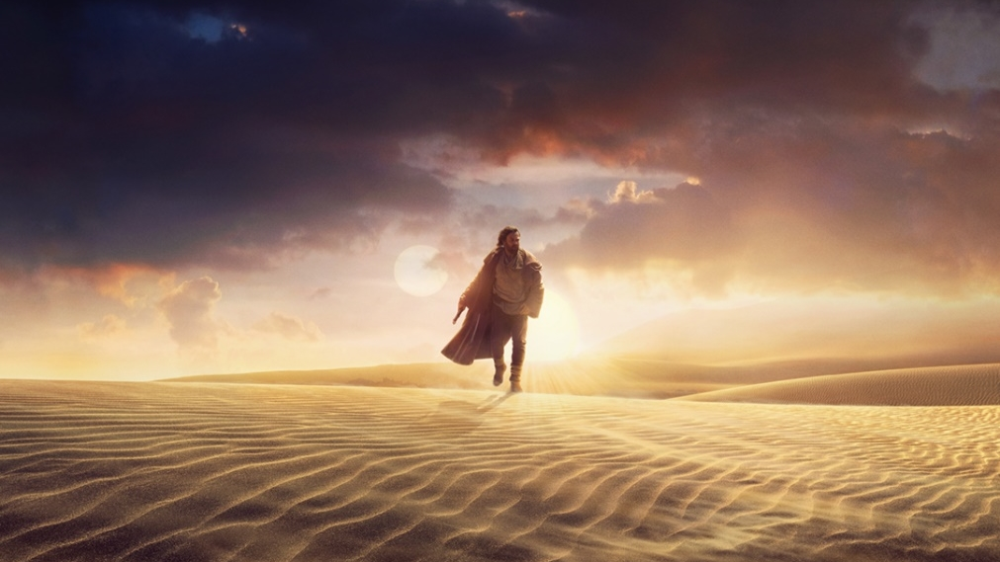
9. Star Wars Rebels (5 BBY a 1 BBY) – série de animação
Os primeiros passos da Aliança Rebelde são apresentados nesta série de animação, que foi produzida entre 2014 e 2018. Além de apresentar ao público diversos personagens originais, alguns rostos familiares marcam presença, como Leia, Obi-Wan, Lando, Darth Maul e Mon Mothma. A série termina logo antes da batalha entre o Império e a Rebelião começar a esquentar.
10. Rogue One: Uma história Star Wars (0 BBY)
Este spin-off funciona praticamente como um prólogo para Uma Nova Esperança. Concebido como um filme de guerra, Rogue One se concentra na tentativa para roubar os planos de construção da Estrela da Morte, resultando na destruição quase total da frota da Aliança Rebelde.
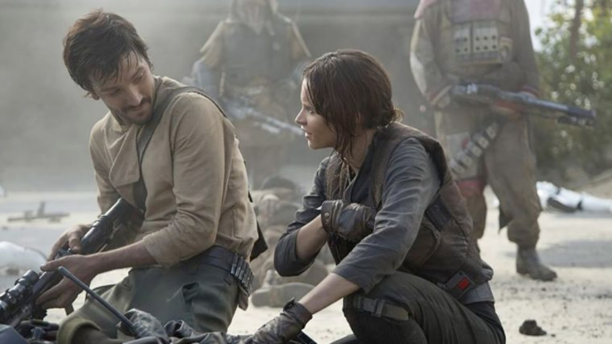
11. Episódio IV: Uma Nova Esperança (0 BBY)
Pois é, o primeiro filme de Star Wars no nosso universo é na verdade o 9º item da cronologia. Por causa de um pedido de socorro enviado pela Princesa Leia, Luke Skywalker embarca em sua grande aventura, com mentoria de ninguém menos do que Obi-Wan Kenobi. Com a ajuda de Han Solo e Chewbacca, eles enfrentam Darth Vader, Luke começa a aprender sobre a Força e a Estrela da Morte destrói Alderaan (para depois ser destruída pela Aliança Rebelde).
12. Episódio V: O Império Contra-Ataca (3 ABY)
A sequência penetra de forma mais sombria no universo de George Lucas, apresentando novos personagens e dramas familiares. Luke começa a treinar com Yoda enquanto Leia e Han Solo buscam refúgio com Lando, somente para cair numa emboscada de Darth Vader. Um dos plot twists mais famosos da história é revelado. Algo sobre alguém ser pai de outra pessoa, mas quem é a gente pra dar spoiler, não é mesmo?
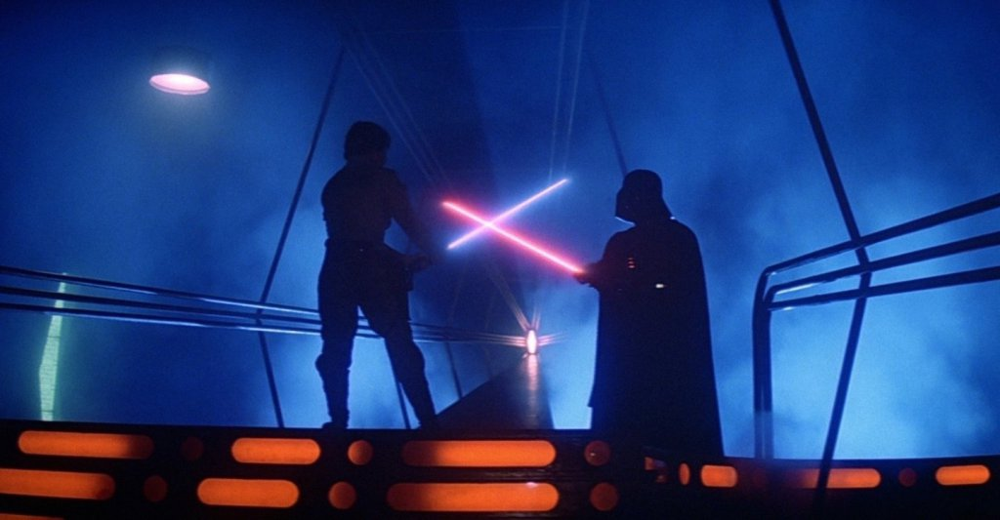
13. Episódio VI: O Retorno do Jedi (4 ABY)
O último filme desta trilogia inicia com o resgate de Han Solo, que ficou aprisionado por Jabba the Hutt no filme anterior. Feito isso, a Rebelião volta ao trabalho de tentar impedir o Império de construir uma segunda Estrela da Morte. Darth Vader e o Império tentam persuadir Luke a migrar para o Lado Negro. O filme marca o fim do Império e da Era da Rebelião. Ah! Também é neste filme que descobrimos que dois personagens são irmãos, mas se você leu todo o nosso resumo da cronologia você já sabe quem são.
A Era da Resistência
14. The Mandalorian (10 ABY) – série de TV
Lançada pelo Disney+, a série é ambientada após a queda do Império e antes da ascensão da Primeira Ordem. Então na verdade ela fica numa espécie de limbo entre a Era da Rebelião e a da Resistência. A série apresenta os contratempos de um pistoleiro que vive nos confins da galáxia, longe da autoridade da Nova República. Quase como um faroeste, só que no universo de Star Wars. É também a série que está causando surtos no mundo inteiro por apresentar o personagem Baby Yoda — o auge da fofura.
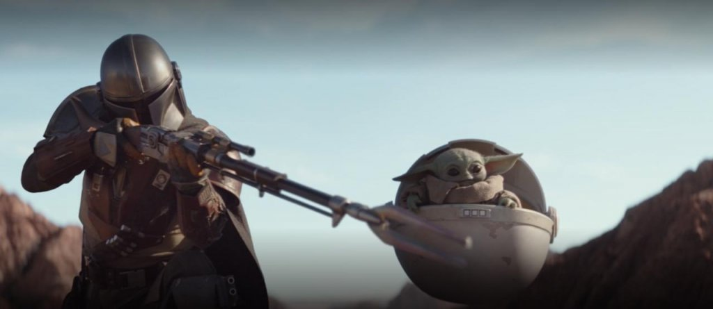
15. O Livro de Boba Fett (10 ABY) – série de TV
Um spin-off de ‘Mandaloriano’, a série apresenta o caçador de recompensas Boba Fett (Temuera Morrison) em suas aventuras pela galáxia. A série estreou em dezembro de 2021 no Disney+.
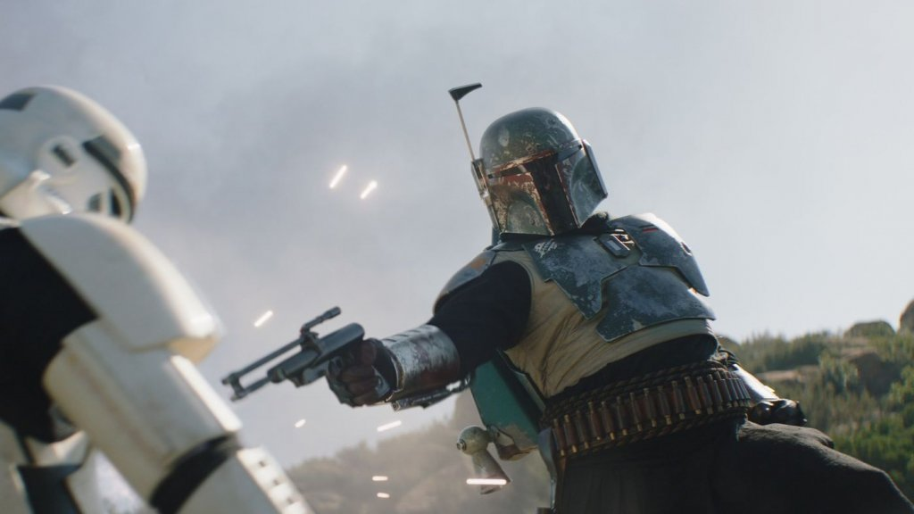
16. Star Wars: Resistance (34 ABY) – série de animação
Esta continuação de Star Wars Rebels é ambientada seis meses antes dos eventos de O Despertar da Força. Como uma das fundadoras da Nova República, a agora General Leia começa a entender a ameaça da Primeira Ordem para a galáxia. A animação também conta com alguns rostos familiares da nova trilogia, como Poe Dameron e a Capitã Phasma.
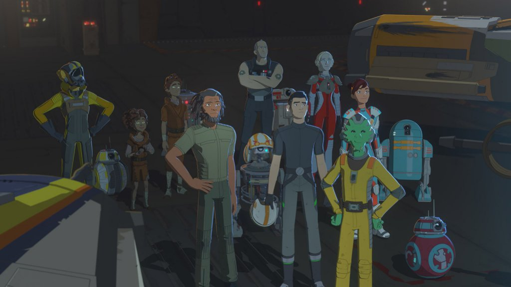
17. Episódio VII: O Despertar da Força (34 ABY)
Trinta anos após O Retorno de Jedi, a nova Resistência, liderada pela General Leia, enfrenta os resquícios do Império, mantidos pelo Supremo Líder Snoke, também conhecidos como a Primeira Ordem. Paralelamente, um ex-stormtrooper faz amizade com Rey, uma mulher com passado desconhecido. Eles logo se juntam a Han, Chewie e Leia para ajudá-los a eliminar uma nova arma destruidora de planetas. Como se tudo isso não fosse suficiente, Kylo Ren, filho de Han e Leia, está do lado errado da história. Rey descobre alguns poderes relacionados à Força e tenta encontrar um solitário Luke Skywalker.
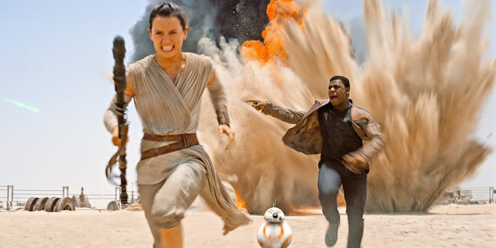
18. Episódio VIII: Os últimos Jedi (34 ABY)
Este filme explora os eventos que ocorrem logo após o fim de O Despertar da Força. A Resistência está com poucos recursos para escapar da Primeira Ordem. Enquanto isso, Rey aprende o que pode com um relutante Luke Skywalker que tenta convencê-la que a Ordem Jedi está acabada e que ele não poderá ajudar a Resistência. Além disso, Rey mostra alguma conexão estranha com Kylo Ren e tenta fazê-lo abandonar o Lado Negro, mas ele acaba enfrentando seus dois mestres: Snoke e Luke. O filme termina com um grande desafio para Rey: liderar os Jedi em uma nova era e reunir os sobreviventes da Resistência.
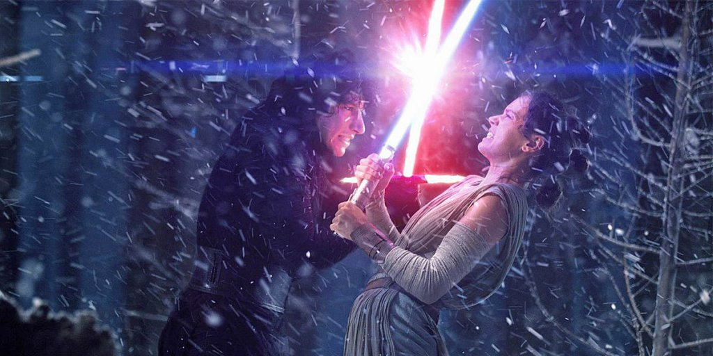
19. Episódio IX: A Ascensão Skywalker (35 ABY)
O último filme de Star Wars se passa um ano depois de onde a história parou. A Resistência está tendo dificuldades em juntar forças contra a Primeira Ordem de Kylo Ren. Além disso, há a expectativa de que o espectro de um antigo inimigo reacenda a velha batalha entre Jedi e Sith, que deve chegar a uma conclusão definitiva.
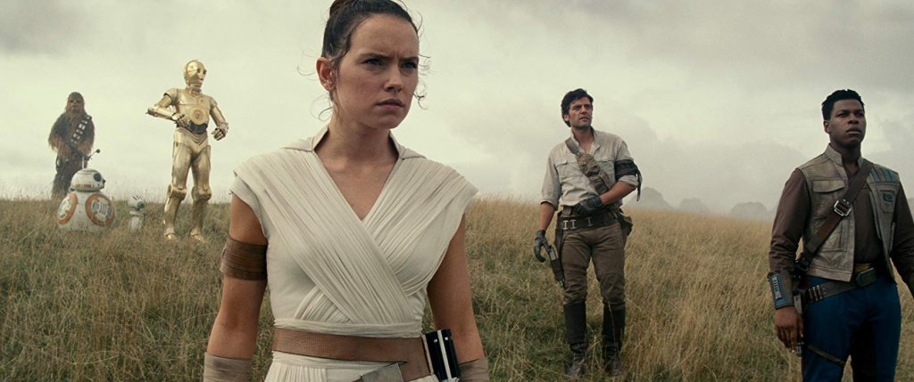
Ainda está perdido? Confira o resumo da cronologia liberado na D23 Expo:
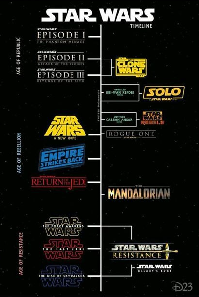